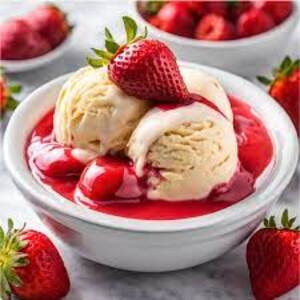

GELATO

INGREDIENTES
750 ml de leche
5 yemas
200 gr de azúcar
1 cucharadita de esencia de vainilla
1 taza de puré de fresas
1 taza de chispas de chocolate
INSTRUCCIONES
PASO 1
Poner una olla amplia llena hasta la mitad con agua a hervir.
PASO 2
En un bol refractario batir las yemas con el azúcar hasta obtener una crema espesa, espumosa y de color blancuzco.
PASO 3
Aromatizar con la esencia de vainilla.
PASO 4
Aparte, colocar la leche en un cazo y calentar fuego bajo. Antes de que comience a hervir, retirar del fuego.
PASO 5
Incorporar la leche de a poco y con cuidado a las yemas, sin dejar de batir.
PASO 6
Colocar el bol en la olla con agua hirviendo a fuego suave y continuar removiendo con cuchara de madera hasta que la crema cubra el dorso de la cuchara. Este proceso toma alrededor de 15 minutos.
PASO 7
Dejar que la preparación entibie un poco antes de añadir el puré de fresas y las chispas de chocolate.
PASO 8
Colocar la mezcla en un recipiente apto para el congelador.
PASO 9
Dejar que la preparación se enfríe por completo en el refrigerador y luego subirlo al congelador durante tres o cuatro horas.